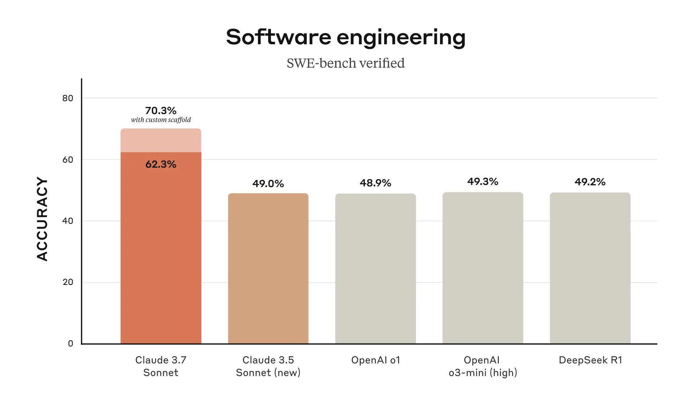
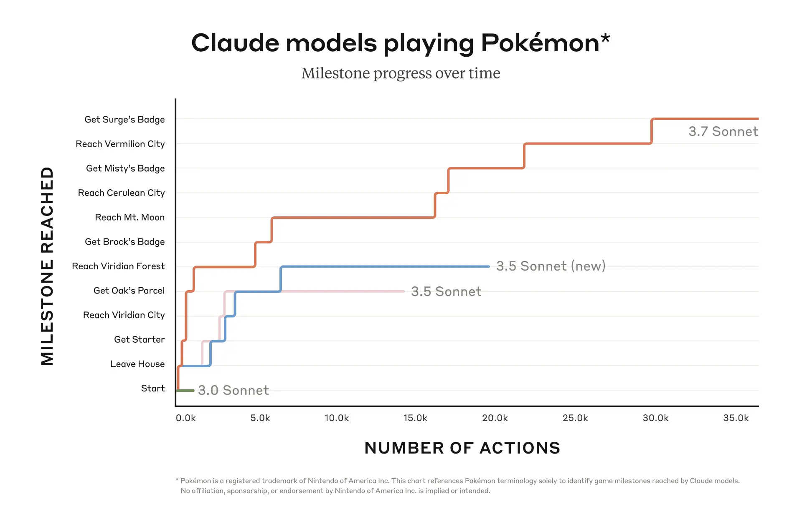
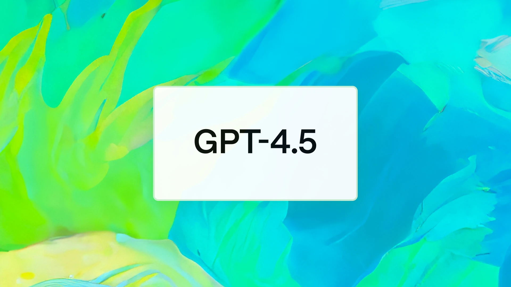

1. 최초의 하이브리드 모델, Claude 3.7 Sonnet

- Anthropic에서 세계 최초로 추론과 비추론을 하이브리드한 모델을 출시했습니다.
-
기존의 AI 모델들은 즉각적으로 응답을 생성하는 대화형 모델과 복잡한 분석을 수행하는 추론 모델로 나뉘어서 발전해 왔습니다. 이번 Claude 3.7 Sonnet은 두 기능을 한꺼번에 수행할 수 있습니다. 단순한 질문에는 신속하게 답하고, 복잡한 요청에는 추론을 통한 해결책을 제시하는 식이죠.
-
Claude 3.7 Sonnet은 특히 코딩 분야에서 강점을 보였습니다. AI 모델의 실제 소프트웨어 문제 해결 능력을 평가하는 SWE-Bench Verified에서 높은 성능을 보였습니다. 앤트로픽에서는 이번 모델이 복잡한 코드를 분석할 수 있고, 이용자의 요구에 따라 적절한 코드 변경도 가능하도록 설계되었다고 말합니다.

- Anthropic은 최근 포켓몬 게임을 통해 모델의 능력을 평가하고 있습니다.
-
그 평가에서 이번 Claude 3.7 Sonnet은 다른 모델들을 압도했습니다. 앤트로픽의 AI 모델들이 플레이해야 할 작품은 바로 포켓몬스터의 고전 명작 ’Pokémon Red’입니다. 기존 3.0 모델은 지우의 집을 떠나지도 못했지만, 확장된 사고가 적용된 3.7 모델은 웅, 이슬, 마티스까지 총 3개의 체육관 관장을 격파해 배지를 획득해 냈습니다.
-
아래 이미지를 클릭하면, Twitch 채널에서 Claude 모델이 포켓몬 게임을 플레이하는 모습을 확인할 수 있습니다. 이미지를 보면 레드 버전을 플레이하는데도 불구하고 게임 화면이 모노톤이 아닌데요. 이는 Claude 모델이 화면을 더 잘 인식하게 하기 위해 Full Color 패치가 적용되었기 때문입니다.
2. OpenAI, 세상에서 제일 비싼 모델 GPT-4.5 공개

- OpenAI가 역대 가장 큰 규모의 모델 GPT-4.5를 공개했습니다.
-
GPT-4가 출시된 지 2년 만의 일입니다. 이번 모델은 OpenAI의 역대 어느 모델보다도 더 많은 컴퓨팅 파워와 데이터가 들어갔습니다. 샘 올트먼은 “GPU가 부족해서 모델 출시를 단계적으로 진행해야 했다”고 말하기도 했습니다. 리소스가 많이 든 영향으로, 가격도 어마어마하게 책정되었습니다. API 사용 기준 100만 토큰 입력에 75달러, 100만 토큰 출력에 150달러로 세상에서 가장 비싼 AI라는 별칭을 얻기도 했습니다.
-
일반적인 지식수준을 확인할 수 있는 SimpleQA 벤치마크에서 GPT 4.5는 GPT-4o나 o1보다 성능이 뛰어난 것으로 나타났습니다. 다른 모델들과 비교해서 환각이 줄었다는 겁니다. 코딩 능력을 테스트하는 벤치마크에서도 GPT-4o보다 성능이 뛰어났습니다. 다만 딥리서치나 Anthropic의 Claude 3.7 Sonnet에는 못 미치는 수준입니다. 즉 기존의 비추론 모델 가운데에서는 좋은 능력을 갖고 있지만, 추론 모델과 비교해서는 성능이 좋다고 하기 어려운 거죠.
- ’속 빈 강정’이라는 평도 있습니다.
-
OpenAI의 공동 창립자인 안드레 카파시는 X를 통해 “모든 것이 조금 더 좋아졌지만, 무엇이 좋아졌는지 지목하기는 쉽지 않다(Everything is a little bit better and it’s awesome, but also not exactly in ways that are trivial to point to.)”고 밝히지도 했습니다. 뉴욕대학교의 게리 마커스 교수는 이번 모델을 두고 nothingburger라고 혹평을 하기도 했습니다.